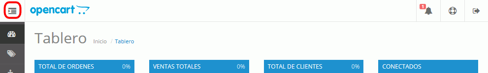

En esta lección se proponen ejercicios para conocer y utilizar OpenCart. Se pueden consultar las soluciones de estos ejercicios de OpenCart, aunque se recomienda intentar realizarlos primero sin recurrir a estas soluciones.
Nota:
Para no tener que estar entrando y saliendo de OpenCart como administrador o como usuario registrado o no registrado, se aconseja acceder a OpenCart desde dos navegadores distintos, en uno como usuario administrador y en el otro como usuario no administrador. En vez de usar navegadores distintos, también se pueden usar varias ventanas privadas de Firefox o varias ventanas de incógnito de Google Chrome o ventanas de exploración InPrivate de Internet Explorer.
OpenCart (3) 1 - Información de usuario Administrador
Modifique el nombre real del usuario administrador e incluya una imagen en su perfil de usuario.
Entre en OpenCart como usuario administrador y haga clic en el icono que despliega el menú.

Se mostrará el nombre e imagen del usuario administrador:

 (puede usar alguna de las imágenes de la página Imágenes para ejercicios)
(puede usar alguna de las imágenes de la página Imágenes para ejercicios)